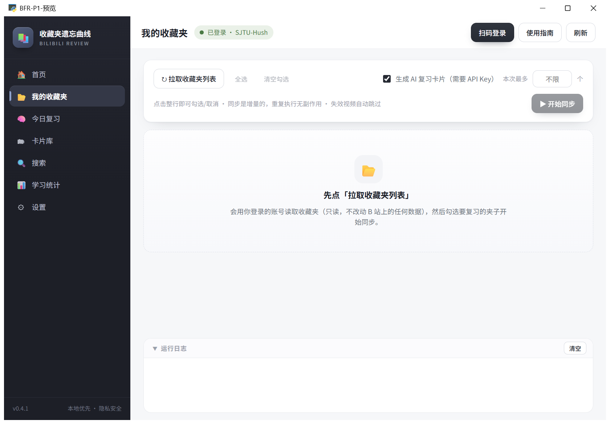
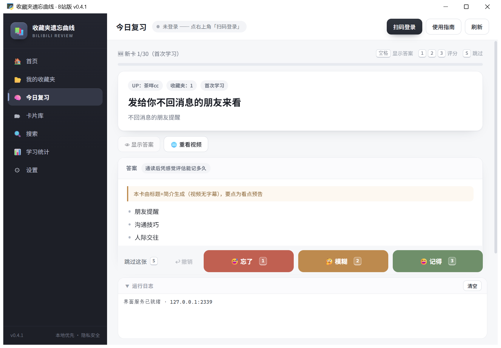
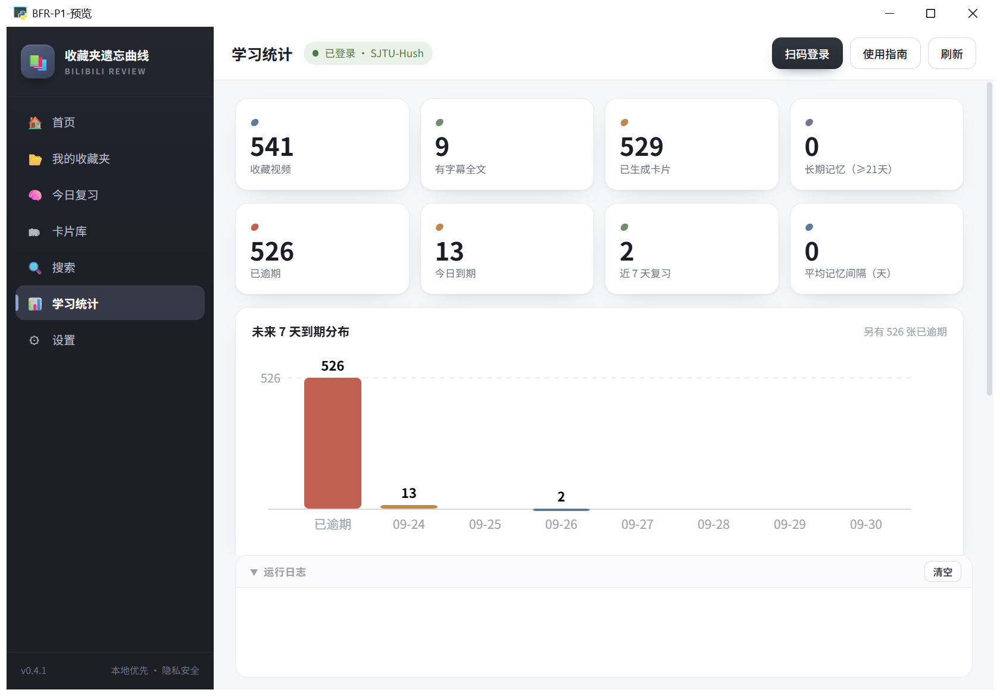
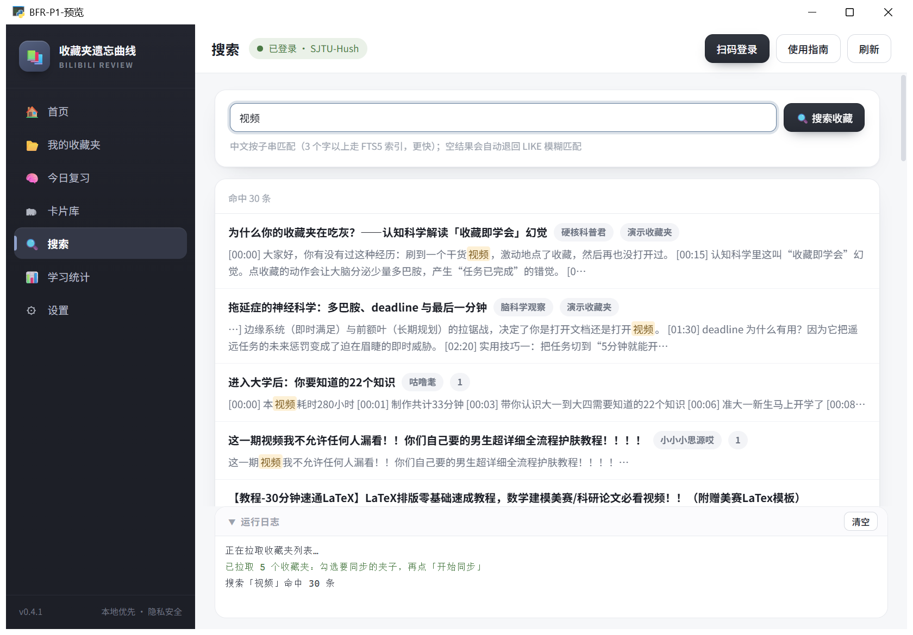
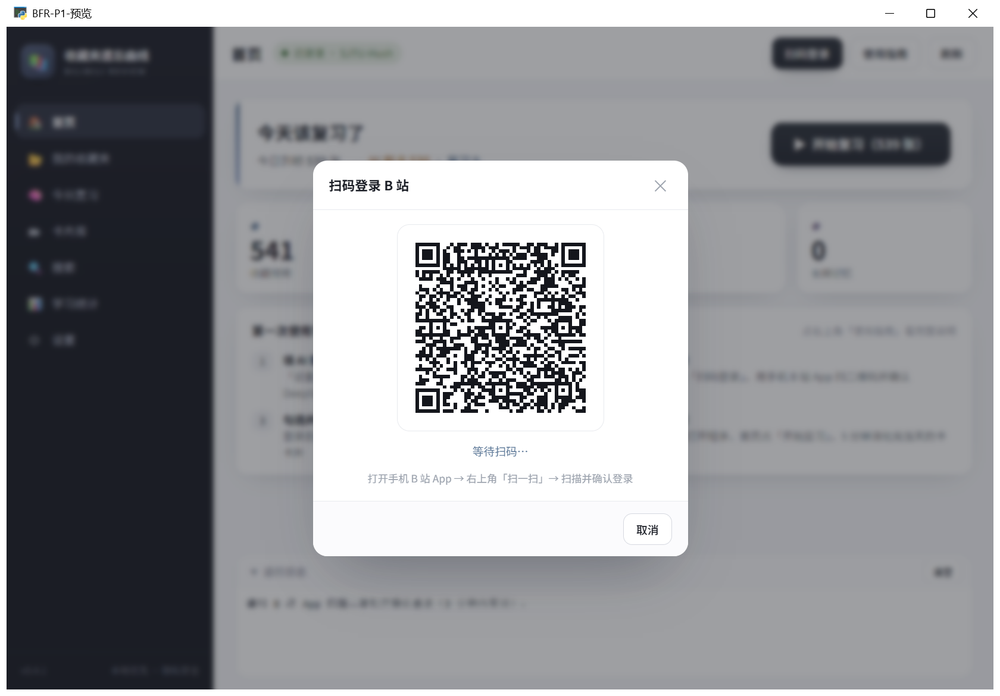

一条完整的工作流
13 个项目里,05 收藏夹遗忘曲线的链路最长 —— 从"点了个收藏"到"真的记住了", 中间隔着同步、摘要、生成、复习、统计五步。下面每一步都是真实运行界面, 数据是实际使用后的:541 个收藏视频、539 张待复习卡片。
收藏不等于学会
点 B 站收藏只制造了「我学过了」的错觉。收藏夹越攒越长, 从来不会提醒你该回来看 —— 它是个只进不出的仓库。
真正形成记忆的是主动回忆加间隔重复。 这个项目就是把收藏夹从仓库改造成一个会主动找你的复习队列: 用 SM-2 简化算法给每张卡排时间,记得牢就隔久一点,忘了就明天再见。

五步走完一轮
下面五步按真实使用顺序排列,每一步配一张实拍截图。
不为没有内容的视频烧 token
几百个收藏视频里,相当一部分没有字幕或字幕信息量极低。 如果对每个都调用一次 LLM,成本和等待时间都撑不住。
所以摘要分三档,按视频实际信息量分流:
- 有字幕 —— 精摘,单独调用
- 无字幕 —— 批量轻摘,8 条合并一次调用
- 无信息 —— 零 AI 兜底,直接标记

复习这一环:先回忆,再看答案
这是整个项目的核心交互。顺序反了就失去意义 —— 直接看内容等于没复习。
新卡与复习卡走两条路
新卡第一次出现,内容还没在记忆里形成,直接读一遍再评估。
复习卡则相反:先自己回忆,想不出来再看答案。 这个"想不出来"的瞬间,就是记忆被强化的时刻。
三档打分,SM-2 排下次
按「忘了 / 模糊 / 记得」评分,SM-2 简化算法自动排下次复习时间。
- 键盘全流程:空格显示答案,1 / 2 / 3 评分,S 跳过
- 评分可撤销 —— 误按了不用重来
- 每天开一次,5 分钟清掉当天的卡
- Windows Toast 提醒,可接 Server酱微信推送

复习之后:看得见才做得下去
统计不是装饰,是坚持不下去时唯一能给自己看的东西。


卡片库
全部卡片的"书架",状态徽章 + 筛选 + 双击详情,与复习排期相互独立 —— 排期乱了不影响你有完整卡片库。
Anki 导出
一键导出 .apkg 牌组,按 BV 号稳定去重,可反复导入 —— 不想被这个工具绑住也有出口。
演示模式
demo 内置 4 张卡片,不登录不花钱即可体验全流程 —— 判断合不合自己的口味不用先配 API Key。
数据边界
同步收藏夹需要登录 B 站。这里用扫码登录,cookie 只存本机。
LLM 摘要用的是你自己填的 API Key(智谱 GLM 有免费额度,也支持 DeepSeek / 本地模型)。 没有 Key 也能用 —— 演示模式可以完整体验一遍流程。
- cookie 存本机,不上传
- API Key 存本地配置,随你填
- 无字幕视频走零 AI 兜底,不消耗额度
- 每日首次使用自动备份数据库,保留最近 7 份

另一条链路:把闲着的电脑变成算力
11 宿舍超算 DormGrid —— 一条命令入网,协调器切任务,节点自动领活。